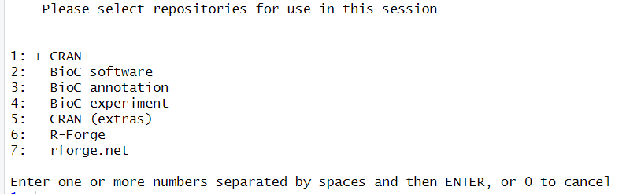

When install.packages fail
Last updated on 2025-09-09 | Edit this page
Estimated time: 12 minutes
Overview
Questions
- What to do when
install.packagestells me the package is not available?
Objectives
- Provide explanations for this problem
- Provide solutions
Installing packages can fail in many ways. The error above, is clearly caused by looking for at package name that does not exist.
The message points us in the direction of the R documentation, which is very information dense. But not very readable.
What does install.packages() do?
In order to understand what can go wrong, it is informative to understand what is happening when everything works as it should.
Running install.packages("package-name") will access one
or more repositories.
These repositories are where the packages live, and the most commonly
used repository is CRAN, the Comprehensive R Archive Network, which is
part of the basic R-infrastructure. But other repositories exist, and we
can specify them either in general settings in R, or by specifying them
in install.packages using the repos
argument.
Most repositories will place restrictions on what packages are allowed. CRAN fx runs a set of tests, making sure a new package is documented and does more or less what it claims to do. Updated packages are also checked to ensure any changes does not break stuff. The checks are continously improving, so a package that passed the tests last year, might no longer live up to the standard.
In order to share the load, CRAN, and some other repositories, have “mirrors”, sites that have the same packages stored, but located in different countries. The internet is fast, but it is quicker to download large amounts of data from a location close to you, rather than on the other side of the globe.
From each repository, install.packages will retrieve a
list, actually a matrix, of available packages. In the matrix there will
be meta data on dependencies (other packages the package need in order
to work), licens, etc.
It will then search for the name of the package you provided in
install.packages, check if you have the depencies
installed, and download the package from the specified location to your
computer.
Packages comes in many forms, but a major difference is wether they are compiled or not. It can come in “source code” - code that is basically text that we can read. Sometimes this is R-code, but often it is written in C or Fortran. Your computer is not able to run this directly.
If the package comes compiled, your computer can run it
directly. And install.packages will download a compiled
version that matches your computer. Something compiled for MacOS will
not be able to run on a Windows computer and vice-versa.
If the package is not compiled, or a version for your operating
system does not exist, install.packages will initiate a
compilation on your computer.
The package, either precompiled, or recently compiled will then be
placed on your computer. By default in the first entry in your
.libPaths() variable. We do not usually bother tinkering
with that.
You have now downloaded and installed a package in R.
But how can this go wrong, and what can we do to fix it?
1. You can’t spell
Well, you probably can. But packages are not always spelled as you would expect. The correct spelling is defined as the way the package name is spelled, and if you make a typo relative to that, install.packages will not find the correct package name. Also, package names are case sensitive. This is an annoying mistake to make, and in our experience surprisingly difficult to locate.
2. You did not look in the right repository.
By default install.packages() looks in CRAN. But
sometimes we need packages that live in other repositories.
R
setRepositories()
allow us to chose one or more of the repositories that R knows about: 
What if we need a repository our local R-installation already know? No worries, a function for that exist:
R
setRepositories(addURLs =
c(CRANxtras = "https://www.stats.ox.ac.uk/pub/RWin"))
2.5 The package is not in the repositories you have selected:
This is almost the same problem. We can get at list, or rather a matrix of all the available packages in the repositories we have selected:
R
ap <- available.packages()
In this example we find 22677 packages.
Rather than viewing all of them, it is better to test if the package we are looking for is actually available:
R
"tidyverse" %in% ap
OUTPUT
[1] TRUEIt is, but remember the point about spelling and case sensitivity.
3. Repository is unavailable
If you get this message:
Warning: unable to access index for repository
The selected repository is probably currently unavailable. you can
try again later, or run chooseCRANmirror() to chose another
mirror, and then try again.
4. Maybe it is not actually a package you want
Many are the times we have tried to run
library(diamonds) followed by
install.packages("diamonds") only to remember that
diamonds is a dataset in the ggplot2 package.
Run data() to get a list of all the datasets available in
your current setup.
5. R is out of date.
The package you want might depend on a more recent version of R. Or another package.
Take a look at the list of available packages we got earlier:
R
ap["baguette", "Depends"]
OUTPUT
[1] "parsnip (>= 1.0.0), R (>= 3.6)"If install.packages("baguette") fails, start by making
sure that you have a version of parsnip installed that
meets the requirements. And also make sure your installed version of R
is adequate.
Depending on your setup, the easy way to update R is:
R
library(installr)
updateR()
6. The package might be out of date
For example it could be archived. If a package is no longer maintained, and do no longer pass the automatic checks in the repositories, it will be archived. However, we can still access it:
R
library(remotes)
install_version("tidyverse", "1.2.3")
An archived package may also be found on github (or another version control system). This is especially useful if the package is actually still maintained but have been archived by CRAN because any error in the automatic checks have not yet been fixed:
R
library(remotes)
install_github("vqv/ggbiplot")
7. A binary for your OS may not exist
CRAN and other repositories will often compile a package to a selection of operating systems. Some packages require additional software to compile, that are not available to CRAN for at given operating system. And some packages are not available as binaries at all.
In this case you will have to compile the package yourself. Do not worry, R will handle it for you.
If you are on windows, you will need to have RTools installed.
On MacOS you will need Xcode
On a Linux machine you will have to compile most packages, but your operating system have access to what it need to do this already.
Havin prepared by installing Rtools or Xcode, you can now run:
R
install.packages("dplyr", type = "source")
If you do need additional software, it will be mentioned under “NeedsCompilation” on cran.r-project.org for the specific package.
8. The package is on GitHub. Or another location.
This is similar to the situation where we have to get a package from
github because it has been archived on CRAN. It requires the
remotes package, and knowledge about where on GitHub the
package resides:
R
library(remotes)
install_github("vqv/ggbiplot")
Other similar services exist, and remotes provides
function for the more popular.
9. There is no source version of the package
A binary version may be available, but a source version is not. Why this should cause problems is a mystery, but it happens.
This can be solved by asking install.packages to stop checking for access to a source version, by running:
options(install.packages.check.source = "no")
Remember to change the option back to “yes” after installing the offending package.
10. The package is in a non-standard repository.
CRAN is the major repository. BioC a close second. But others exist.
If the repository is reasonably compliant with CRAN,
install.packages("Rbbg", repos = "http://r.nonstandard.repo.org")
will work. Otherwise you will have to read the documentation of the
non-standard repo.
11. the repo is down or does not exist.
You will typically get something like
Warning: unable to access index for repository
Running this
install.packages("quux", repos = "https://does.not.exist/CRAN")
will fail because “does.not.exist” does not exist. Double check that the
repo actually exist (or that you have no typos in the name). If it does
exist, it might be a temporary problem and can, maybe, be solved by
trying again later.
12. The repo is blocking you
Besides being blocked because you are not allowed to access the repo, this can be caused by the repo throttling accesss. It often happens with installations from GitHub, if a lot op people try to install at the same time from the same location. In this case you will have to wait.
- Use
.mdfiles for episodes when you want static content